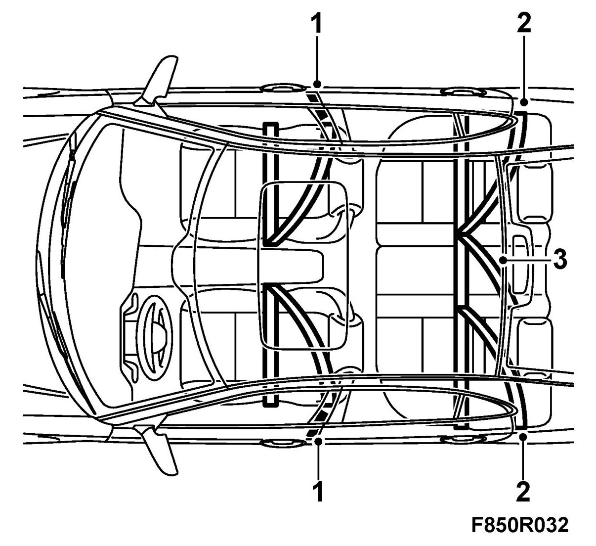
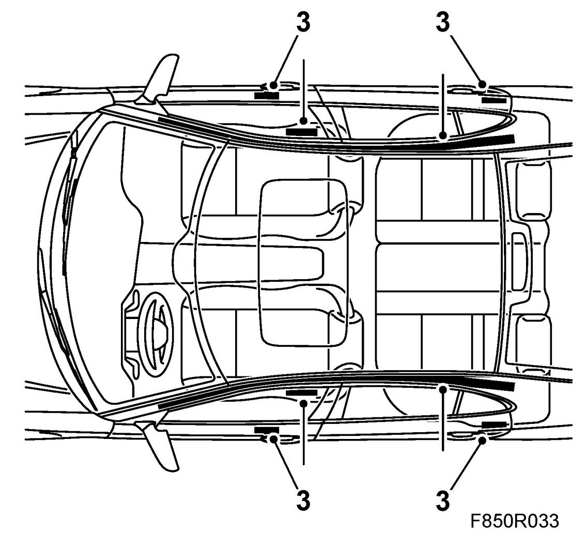
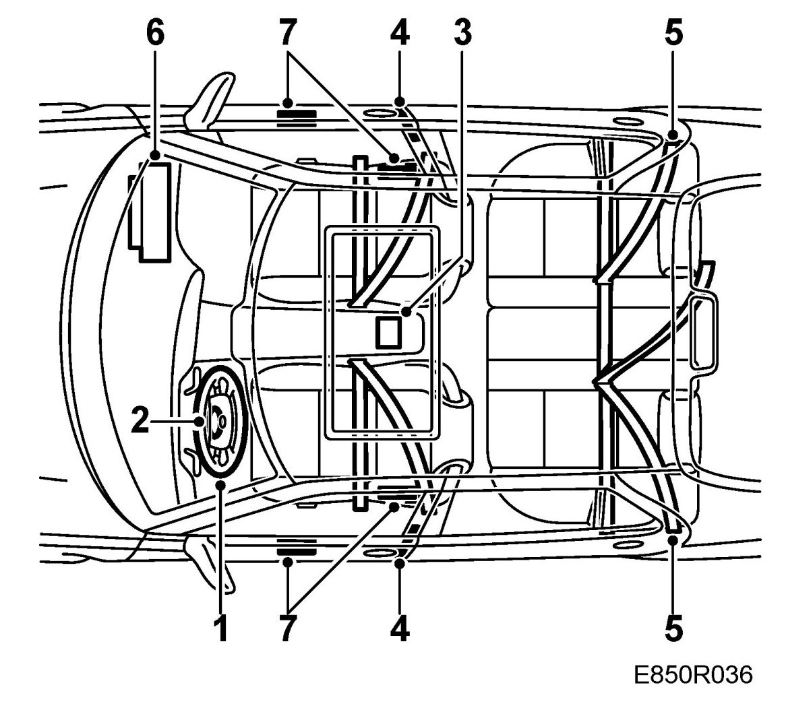

Checking Safety Components In Connection With the Repair of Crashed Cars
Checking Safety Components In Connection With The Repair Of Crashed Cars
Cars with activated seat belt tensioners and/or side airbags and inflatable curtain/roll bars (CV)
During the repair of cars with only activated seat belt tensioners and/or side airbags and inflatable curtain/roll bars (CV), components must be replaced as follows.
The control module can be used for a maximum of three times with activation of seat belt tensioners and/or side airbags and inflatable curtain/roll bars (CV).
Check and rectify the wiring harness if necessary for the side impact sensors, side airbags, inflatable curtain/roll bars (CV) and seat belt tensioner.
Cars with activated seat belt tensioners
During the repair of cars with activated seat belt tensioners the following components should always be replaced:
- All seat belts with seat belt tensioners on the front seat used during the accident (1)

- Both seat belts on the outer seats on the rear seat. (2)
- The seat belt for the centre seat on the rear seat, if used during the accident (3)
Cars with activated side airbags and inflatable curtain/roll bars (CV)
During the repair of cars with side airbags and inflatable curtain/roll bars (CV) the following components must always be replaced:
- Side impact sensors, inflatable curtain, side airbag and backrest upholstery bag (3). (The side impact sensors do not need to be replaced if there has been no mechanical damage to the sensor and if the sensor does not give an trouble code).

- The roll bar (CV) must be replaced if it is deformed or shows visible signs that it has been exposed to external force or binds when being reset to its original position.
If the roll bar is reset to its original position following activation (e.g. to facilitate operating the soft top) the movement of the roll bar must be checked before a new activation unit is fitted.
WARNING: The backrest upholstery bag should always be replaced with an activated side airbag. A damaged or repaired backrest upholstery bag can affect the performance of the side airbag.
Cars with activated airbags
During the repair of cars with activated airbags the following components should always be replaced:
- Steering wheel and airbag and the steering column assembly (1)

- Contact roller (2)
- Control module (3)
- All seat belts with seat belt tensioners on the front seat used during the accident (4)
- Both the seat belts on the outer seats. The seat belt for the centre seat on the rear seat, if used during the accident (5).
- The passenger side airbag (where appropriate) and the dashboard (6)
- The side airbags, with respective sensors and backrest upholstery bags, which have been activated during the accident. (The side impact sensors do not need to be replaced if there has been no mechanical damage to the sensor and if the sensor does not give a diagnostic trouble code) (7).
- Front sensors, (The front sensors do not need to be replaced if there has been no mechanical damage to the sensor and if the sensor does not give an trouble code) (8)
- Inflatable curtains, which have been activated during the accident, with A-, B-, C-pillar trim and headlining
- An activated roll bar (CV) which is visibly affected by external force or binds when being reset to its original position.
The following components should be checked with regard to burn damage and deformation:
- knee shield
- airbag system wiring harness
- windscreen.
Replace damaged components.
WARNING:
- Replace all seatbelts if it cannot be established without doubt which belts were in use when the accident occurred.
- Always replace the seatbelt with belt tensioner on the passenger side if it was in use when the accident occurred.